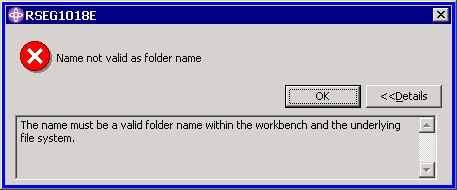
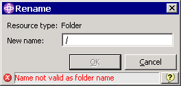
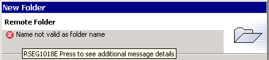
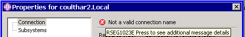
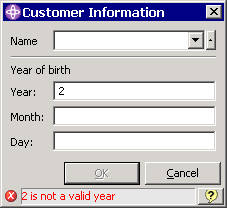
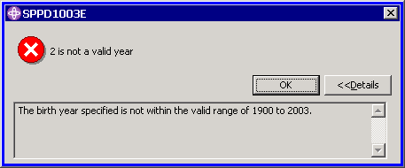

To work with messages, which are defined in an xml message file, you use:
Once you have defined your message file, you must update your plugin class to load it at startup time.
To do this, simply call the static method
loadMessageFile
in the RSE-supplied SystemBasePlugin class.
After the message file is loaded into memory, you can extract messages from it by calling the static method
getMessage
from the same SystemBasePlugin class.
The following classes are all defined in the com.ibm.etools.systems.core.ui.messages package.
The loadMessageFile method in SystemBasePlugin, returns an instance of SystemMessageFile, representing the parsed message file. It is methods in this which return individual messages.
To do message variable substitution, call the appropriate overload of the makeSubstitution method in the message object, passing as many parameters as there are unique substitution variables in the message.
To get the first level message text, call getLevelOneText on the message object. To get the second level help, call getLevelTwoText.
To display a message in a dialog, instantiate SystemMessageDialog, passing in a parent shell and the message object, and then call the appropriate open method in the dialog object. Here is what the message dialog looks like, for a message of type Error (the type dictates the error icon):

If you are extending the RSE class SystemPromptDialog for dialogs, or AbstractSystemWizardPage for wizard pages or SystemBasePropertyPage for property pages, you can display the message to the user by calling the setErrorMessage method all these classes support. These classes all implement the interface ISystemMessageLine, which also includes the method clearErrorMessage. For non-error messages, use setMessage and clearMessage.
Here is what a system message issued in a SystemPromptDialog dialog looks like:

The user can select the question mark icon on the right to see the full message dialog, and hence access the second level help for the message.
Here is what a system message issued in an AbstractSystemWizardPage looks like:

If the user clicks the mouse on the message or icon, they will see the full message dialog for the message.
Here is what a system message issued in a SystemBasePropertyPage looks like:

Again, if the user clicks the mouse on the message or icon, they will see the full message dialog for the message.
The following class is defined in the com.ibm.etools.systems.model package.
Many of the RSE APIs throw com.ibm.etools.systems.model.SystemMessageException, which encapsulates a system message object. To get the encapsulated message, call getSystemMessage(). To display the message in an RSE message dialog box, simply call displayMessage() on the exception object. To get the first-level text, call getMessage(), or getSystemMessage().getLevelOneText()
Declare the messages via the Message tag in a message file, such as sampleMessages.xml
<?xml version="1.0" encoding='UTF-8'?>
<!DOCTYPE MessageFile SYSTEM "../com.ibm.etools.systems.core/messageFile.dtd">
<!-- This is an exammple of a message file used by SystemMessage and SystemMessageDialog -->
<MessageFile Version="1.0">
<Component Name="Samples Plugin" Abbr="SPP">
<Subcomponent Name="Dialogs" Abbr="D">
<!-- Component 'D' for dialog sample messages -->
<MessageList>
<Message ID="1003" Indicator="E">
<LevelOne>%1 is not a valid year</LevelOne>
<LevelTwo>The birth year specified is not within the valid range of %2 to %3.</LevelTwo>
</Message>
<!-- repeat Message elements as needed -->
</MessageList>
</Subcomponent>
</Component>
</MessageFile>
import com.ibm.etools.systems.core.ui.messages.*; // for message file classes
import com.ibm.etools.systems.core.*; // for SystemBasePlugin
...
private static SystemMessageFile messageFile = null;
...
messageFile = SystemBasePlugin.loadMessageFile(descriptor, "sampleMessages.xml"); // in constructor
...
/**
* Retrieve a message from this plugin's message file
* @param msgId - the ID of the message to retrieve. This is the concatenation of the
* message's component abbreviation, subcomponent abbreviation, and message ID as declared
* in the message xml file.
*/
public static SystemMessage getPluginMessage(String msgId)
{
return SystemBasePlugin.getMessage(messageFile, msgId);
}
SystemMessage errorMessage = SamplesPlugin.getPluginMessage("SPPD1003");
errorMessage.makeSubstitution(input, "1900", "2003");
setErrorMessage(errorMessage);

SystemMessageDialog msgDlg = new SystemMessageDialog(shell, errorMessage);msgDlg.open(); // to open with details not showing //msgDlg.openWithDetails(); // to open with details already showing
